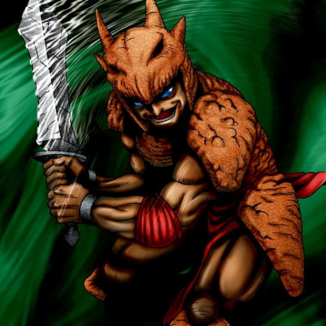

Minomushi Warrior

STATS
ATK: 1300
DEF: 1200DECK COST
Deck Cost per Card: 25Fusion List (4 Possible Fusions)
- Minomushi Warrior + Dancing Elf = Mystical Sand
- Minomushi Warrior + Waterdragon Fairy = Mystical Sand
- Minomushi Warrior + Yamatano Dragon Scroll = Stone D.
- Minomushi Warrior + Queen's Double = Zombie Warrior